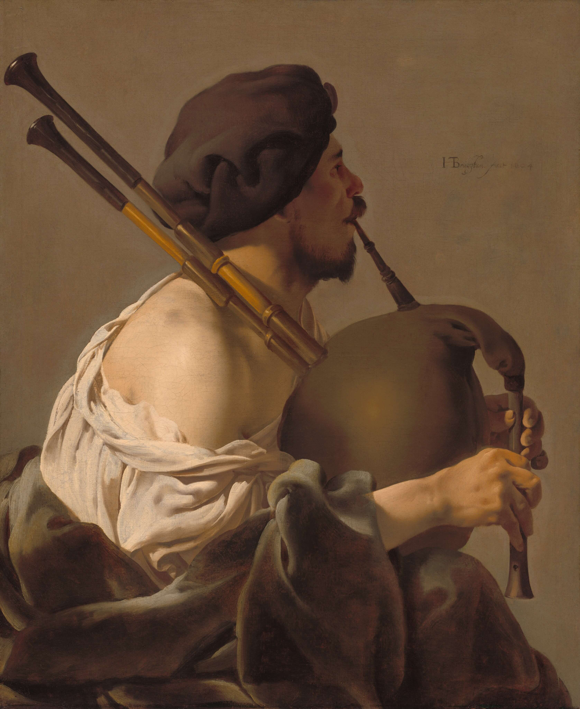
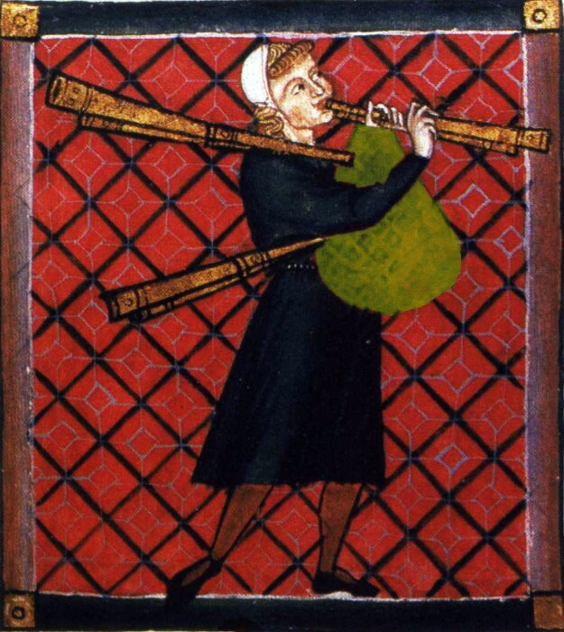
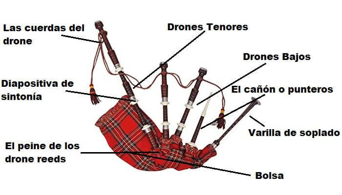
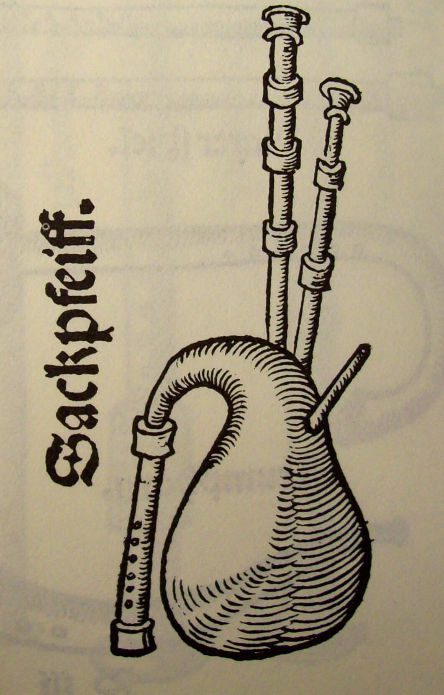

La Gaita.
La gaita, el instrumento nacional de Escocia es un instrumento de viento madera que utiliza cañas cerradas alimentadas por un depósito constante de aire en forma de bolsa. Las gaitas escocesas de las Grandes Tierras Altas son las más conocidas en el mundo anglófono; sin embargo, las gaitas se han tocado durante un milenio o más en grandes partes de Europa, el norte de África y Asia occidental, incluyendo Turquía, el Cáucaso y alrededor del Golfo Pérsico. El término gaita es igualmente correcto en singular o plural, aunque los gaiteros suelen referirse a las gaitas como «los tubos», «un conjunto de tubos» o «un soporte de tubos».
Además, es un instrumento de viento que consiste en dos o más tubos de una o dos lengüetas, las cuales son puestas en movimiento por el viento alimentado por la presión del brazo sobre una bolsa de piel de animal (o de tela cauchutada). Los tubos se mantienen en cajas de madera atadas a la bolsa, que se infla ya sea por la boca (a través de un soplete con una válvula antirretorno de cuero) o por medio de un fuelle atado al cuerpo.

Historia de la gaita.
 Ya en el siglo IX se aludían a las gaitas en Europa; las pruebas anteriores son escasas, pero incluyen cuatro referencias latinas y griegas de alrededor del año 100 a.C. y, posiblemente, una terracota alejandrina de alrededor del año 100 a.C. (en Berlín). En los primeros, la bolsa es típicamente una vejiga o una piel entera de oveja o cabra, menos los cuartos traseros; más tarde, se cortaron dos trozos de piel para darles forma y coserlos juntos. Las gaitas siempre han sido instrumentos folclóricos, pero a partir del siglo XV algunas se utilizaron para la música de corte, y otras han sobrevivido como instrumentos militares. origen de la gaita
La «Oxford History of Music» o «Historia de la Música de Oxford» hace mención de la primera gaita documentada que se encontró en una losa hitita en Eyuk. Se estima que esta gaita esculpida data del año 1.000 a.C. Se hace mención bíblica de la gaita en el libro de Génesis y en el tercer capítulo de Daniel, donde se cree que la «sinfonía» de la banda de Nabucodonosor era una gaita. Estos primeros tubos o, sin bolsa ni depósito, fueron probablemente el segundo instrumento musical en evolucionar. La historia musical dicta que, en este caso, los gaiteros tienen que pasar a un segundo plano con respecto a los instrumentos de percusión. Estos primeros tubos utilizaban materiales de taladro natural (cañas huecas, tallos de maíz, bambúes, etc.).
La gaita romana y su evolución.
La gaita romana o «tibia utricularis» representó una gran innovación, la adición del reservorio. Los historiadores han notado que las monedas romanas representan a Nerón tocando la gaita, no el violín.
El primer «saco Dudel» dio lugar a una serie de gaitas populares europeas, asiáticas y africanas, a saber, la Bock (alemana), la Zukra (norte de África), la Gaita (Portugal y España), la Zampogna (Italia), la Cornemuse (Francia), la Moshug (India), el Zumarah (Egipto), y los ejemplos flamencos, polacos, griegos y húngaros. Una extensa y minuciosamente documentada colección de estos instrumentos se puede encontrar en la sección de Instrumentos Musicales del Metropolitan Museum of Art de la ciudad de Nueva York. Además, en las pinturas de Breughel, Teniers, Jordaens y Durer se pueden encontrar ejemplos de gaitas folclóricas antiguas.
Tipos de gaitas.
A diferencia del resto de los instrumentos, los tipos de gaitas se determinan por el país de origen. Cada país tiene sus propias variaciones sobre las gaitas estándar y normalmente las conoce con un nombre diferente. Algunos de los diferentes tipos de gaita en el mundo son el Biniou de Francia, el Pijpzak de los Países Bajos, el Dudelsack de Alemania y el Bock de Austria. Además de las variaciones de nombre, existen ligeras variaciones en la construcción básica de los tubos que dan a cada versión su propia singularidad de su región de origen. Y además de la singularidad en la apariencia y construcción de las gaitas, también suele haber un traje tradicional vestido con el gaitero que también varía con el país y que se puede ver en eventos y celebraciones musicales tradicionales.
Gaitas de Europa Occidental.
Las gaitas, aunque están muy asociadas con Escocia, se encuentran en toda Europa y en muchas partes del mundo y lo han estado durante muchos años. En Europa Occidental hay muchos tipos bien conocidos de gaitas que son muy similares a las gaitas de las tierras altas escocesas o a las pequeñas gaitas relacionadas de las tierras bajas y de Northumberland. Leer más acerca de: gaitas de Europa occidental.
Gaitas del Norte de Europa.
Como en la mayor parte del continente europeo, la gaita figura con frecuencia en las tradiciones folclóricas de los países del norte de Europa. Aunque hay muchos tipos diferentes de gaitas – y algunas variedades distintas dentro de las fronteras nacionales – es notable que todas siguen la misma idea de una bolsa, un canto y unos zánganos, y sólo falta la cerbatana en las versiones que son sopladas con fuelle. Leer más acerca de: gaitas del norte de Europa.
Gaitas de Europa del Este.
La asociación inmediata que hacemos entre la gaita y Escocia significa que tendemos a pasar por alto las muchas otras formas de gaita que se encuentran en el continente europeo y en otras partes del mundo. De hecho, se cree que los primeros registros de gaitas, unos cientos de años antes de que se conocieran en Escocia, proceden de Europa del Este. Leer más acerca de: gaitas de Europa del este.
Gaita del sur de Europa.
Puede sorprender a mucha gente encontrar que el sur de Europa es una especie de semillero de gaitas; muchos de los países de esta zona tienen sus propias versiones de lo que es un instrumento folclórico tradicional en muchos países, y las similitudes entre todos ellos son interesantes de observar. Leer más acerca de: gaitas del sur de Europa.Gaitas del suroeste de Asia.
Aunque muchas personas consideran que la gaita es un instrumento principalmente europeo, hay muchos ejemplos de tales instrumentos tanto en el suroeste de Asia como en el norte de África. Es fácil creer que los viajeros de la región europea los hayan llevado allí, pero la tradición de la gaita sigue prevaleciendo en países como Turquía, Irán y muchas zonas del Cáucaso. Leer más acerca de: gaitas del suroeste de Asia.
Gaita del norte de África.
Existe cierta controversia en cuanto a si las gaitas encontradas en los países del norte de África, y existen varias versiones, provienen de visitantes europeos que llevaban consigo los instrumentos hace muchos años o si surgieron de forma independiente, y posiblemente antes. Leer más acerca de: gaitas del norte de África.
Partes de la gaita.
Para lograr una buena interpretación de este instrumento, el gaitero debe conocer cada una de las partes que conforman su instrumento de una manera muy minuciosa, por ello conoceremos las partes de una gaita.
Partes de una gaita.
Varilla de soplado.
El músico llena la bolsa (con el aire de sus pulmones) usando el soplete como una boquilla. Esto se adhiere a la bolsa. También hay una válvula dentro que mantiene el aire fluyendo dentro de la bolsa (y no hacia afuera). El jugador debe llenar continuamente la bolsa para hacer sonar los tubos.
Drones Bajos.
Los zumbidos son los responsables del característico sonido bajo que emana de los tubos, y el sonido bajo produce un tono que está una octava por debajo del de los zumbidos tenor, llenando el sonido.
Drones Tenores.
Los zánganos son responsables del llamado «zumbido» que emana de las tuberías. Los dos drones tenor están afinados una octava por encima del dron bajo. El sonido viaja a través de la parte superior de los zánganos (por encima del hombro del jugador).
La bolsa.
La bolsa es una vejiga que está continuamente llena de aire (de la varilla). Una vez que la bolsa está llena, el jugador debe sacar aire de la bolsa (usando su brazo). Esto empuja el aire a través del puntero y las cañas de drone para hacer un sonido.
La lengüeta de caña.
La lengüeta de la gaita, hecha de dos astillas de bambú bien tejidas, está escondida dentro de los tubos, entre la bolsa y el puntero. El aire es empujado desde la bolsa a través de la lengüeta, produciendo el sonido para las notas del puntero.
El cañón o punteros.
El puntero es la parte de los tubos que realmente produce notas melódicas. El músico sostiene el puntero verticalmente y los «dedos» el puntero de forma similar a un clarinete. Cubrir o descubrir un agujero con un dedo produce una nota diferente.
Las cuerdas del drone.
Estos son elegantes cordones tejidos que se atan alrededor del eje de cada zángano. Aunque se ven bien y a menudo combinan con la cubierta de la bolsa o el uniforme, las cuerdas de los zánganos permiten que los zánganos cuelguen a cierta distancia uno del otro, mientras permanecen juntos.
Diapositiva de sintonía.
Al acortar o alargar la duración, el jugador encuentra la nota deseada y afina los zumbidos. Las partes de las diapositivas de afinación a menudo están ornamentadas con plata, marfil u otros materiales, aunque estos son sólo decorativos y no cambian el sonido de las tuberías.El peine de los drone reeds.
Cada zángano tiene una caña larga dentro, en la base. Se inserta en la base del dron, entre la bolsa y el dron mismo. Actuando como una válvula de flujo de aire, permite que el aire sea empujado a través del cuerpo del dron, produciendo un sonido de zumbido bajo.
¿Cómo funciona las gaitas?
 Las gaitas producen música a partir de cañas cerradas a las que se suministra un flujo constante de aire contenido en una bolsa. Aunque hay cientos de diferentes tipos de gaitas, la mayoría consisten de los mismos elementos básicos: un suministro de aire, una bolsa, un chanter y un drone.
Los gaiteros soplan aire a través de una cerbatana hacia una bolsa, que puede estar hecha de piel de animal o de materiales sintéticos más modernos. La bolsa puede proporcionar un flujo constante de aire mientras toca música. Esto permite que el reproductor cree un sonido continuo durante algún tiempo.
El puntero es una pipa que se toca con las dos manos. Produce la melodía y contiene una sola o doble lengüeta. También es abierto, lo que significa que los jugadores no pueden hacer que el puntero deje de sonar una vez que ha comenzado. Esta es la razón por la que la mayoría de la música de gaita no tiene descansos (pausas) en la música.
Las gaitas también suelen tener al menos un zángano. Muchos tienen tres o más drones. Los zánganos son tubos largos con lengüetas simples. Cuando un jugador comienza a tocar las gaitas, los zánganos emiten un sonido continuo en el que la melodía se toca con el puntero.
¿La gaita y su importancia en la música escocesa?
Básicamente la gaita es utilizada para la música escocesa. La palabra gaélica escocesa pìobaireachd significa simplemente «música de gaitas», pero ha sido adaptada al inglés como piobaireachd o pibroch. En gaélico, la «gran música» de la gaita de las Grandes Tierras Altas se denomina ceòl mòr, y la «música ligera» (como marchas y melodías de baile) se denomina ceòl beag.
En comparación con muchos otros instrumentos musicales, la gaita de las Tierras Altas está limitada por su rango (nueve notas), la falta de dinámica y el estilo de legato forzado, debido al flujo continuo de aire de la bolsa. La gaita de las Grandes Tierras Altas es un instrumento de lengüeta cerrada, lo que significa que las cuatro lengüetas están completamente encajadas dentro del instrumento y que el músico no puede cambiar el sonido del instrumento a través de la posición de la boca o de la lengüeta. Como resultado, las notas no pueden separarse simplemente dejando de soplar o de hablar en lenguas, por lo que las notas de gracia y las combinaciones de notas de gracia, llamadas «adornos», se utilizan para este propósito.
Estos son adornos más complicados que utilizan dos o más notas de gracia incluyen dobleces, taorluaths, tiros, agarres y birlos. También hay un conjunto de adornos que se utilizan habitualmente para pìobaireachd, por ejemplo el atrevimiento, vedare, chedare, darado, taorluath y crunluath. Algunos de estos adornos han encontrado su camino en la música ligera a lo largo del siglo XX. Estos adornos también se utilizan para enfatizar notas, por ejemplo, para enfatizar la nota beat u otros patrones de fraseo. Estas tres notas de gracia (Sol, Re y Mi) son las más utilizadas y a menudo se tocan sucesivamente.
{kind=link}